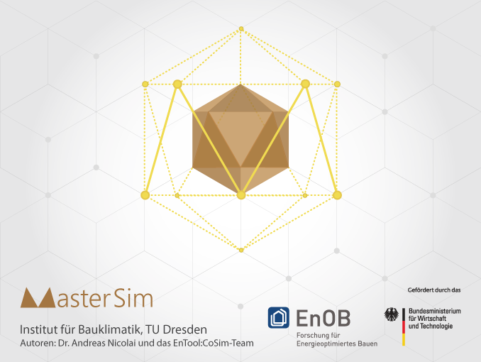

About MasterSim ...MasterSim is an FMI Co-Simulation master and programming library. It supports the Functional Mockup Interface for Co-Simulation in Version 1.0 and 2.0. Using the functionality of Version 2.0, it implements various iteration algorithms that rollback FMU slaves and increase stablity of coupled simulation. MasterSim is actively developed at the Technische Universität Dresden, Institut für Bauklimatik (see contact page). Parts of MasterSimMasterSim consists of three parts:
Why use MasterSim?First of all, it is free! The complete source code is available on its [SourceForge-project page] under an open source license. But there are many other reasons for using MasterSim:
Details about these features can be found on the [documentation page] or on the SourceForge-project [WIKI-pages]. |

MasterSim Software LibraryLibrary FunctionalityWith the library you can implement co-simulation functionality into your own simulation programs with little effort. FMU Import functionalityThe library supports extraction of FMU archives, reading of modelDescription.xml files, importing shared library symbols into memory. This is all neatly encapsulated in corresponding classes. Master-AlgorithmsIncluded in the library source code are standard master algorithms, such as Gauss-Jacobi, Gauss-Seidel and Newton. They can be readily used in own code without any work necessary (except for tuning of some numerical parameters, perhaps). Best-practice guide and example codeThe command line co-simulation solver MasterSimulator and the user interface code can be used as guide and tutorial on how to write such code yourself. Co-Simulation Standard SupportThe library supports currently the FMI Co-Simulation Standard 1.0 and 2.0. Some of the algorithms (i.e. all algorithms that need setting back of FMU states) require FMI v2.0, but Gauss-Jacobi and Gauss-Seidel work with FMU 1.0 as well. |